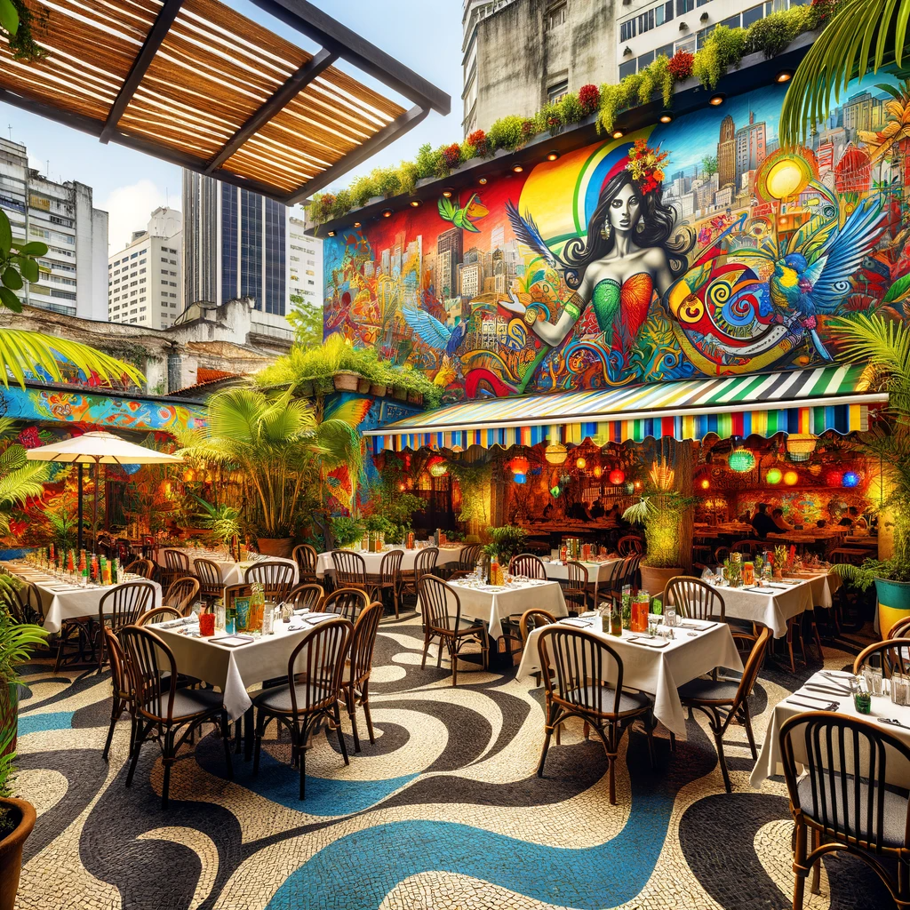

Japanese
American
British
Brazilian
Italian
Japanese
American
British
Brazilian
Italian
|
A traditional Japanese restaurant in a quaint street of Kyoto, Japan. The restaurant
exterior is characterized by classic wooden architecture with pap

A classic American diner located on a busy street in New York City. The diner features a
retro 1950s theme with neon lights, a jukebox, and red leathe
A quaint British pub located in the heart of London. The pub is adorned with dark wood
paneling, a cozy fireplace, and antique decorations, offering a

A vibrant Brazilian restaurant in the heart of Rio de Janeiro. The restaurant is lively and
colorful, featuring bright murals, tropical plants, and rhyth

A charming Italian trattoria in a narrow, cobblestone street of Rome. The restaurant's
exterior is adorned with climbing ivy and outdoor seating under
|